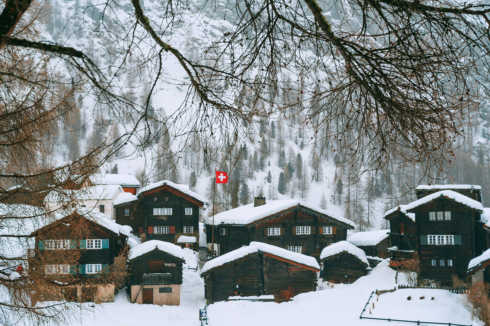

Actividades de Invierno
Descubre la magia del invierno suizo, desde emocionantes descensos en esquí hasta noches estrelladas sobre hielo.
Cuando uno piensa en los destinos turísticos más importantes del mundo seguramente las primeras imágenes que vienen a nuestra mente son: Playas paradisíacas como Cancun, las increíbles islas en Hawaii, exóticos destinos en Tailandia o puedes pensar en increíbles centros culturales de gran importancia mundial e histórica por ejemplo Roma, Paris, últimamente también Japón es un destino soñado por las generaciones más jóvenes que crecieron consumiendo contenidos de país Nippon. Otra alternativa bastante común entre las personas es visitar las más grandes urbes o centros del lujo mundial cómo puede ser New York, Dubai lugares que sin duda son increíbles y que visitarlos puede ser un obligado durante nuestra vida.
Suiza puede que no este dentro de los 10 primeros destinos turísticos en el mundo, pero sin duda tiene todo lo necesario para dejarte boquiabierto y ofrecerte un sin fin de actividades que no te puedes perder, una de ellas es la multiculturalidad ya que esta nación tiene 4 idiomas oficiales: italiano, francés, alemán y romanche, si te gustan los idiomas aquí seguro podrás platicar con alguien.
Siendo uno de los países más desarrollados a nivel mundial y portando el increíble 4to lugar entre los países más ricos del mundo, puedo estar seguro que habrá alguna actividad para ti, si eres un entusiasta catador de quesos, amante del chocolates, aficionado a las navajas o un loco de los relojes, encontraras miles de aventuras que podrás experimentar en sus ciudades más importantes, o visitando las pequeñas villas sacadas de los cuentos de hadas europeos, sobretodo si eres una persona a la que le gusta la tranquilidad, el aire fresco y la naturaleza este será el viaje perfecto para ti.
¿Cómo que no sabes donde esta Suiza? Creo que necesitamos un mapa ahora mismo. Justo en el centro de Europa sin salida al mar, la nación suiza se encuentra rodeada por Alemania, Francia, Italia y Austria. A pesar de no contar con mar tienen la suerte de contar con una gran cantidad de lagos y ríos que llenan este destino de los suficientes mantos acuíferos incluso si te gustan las actividades acuaticas.
Descubre la magia del invierno suizo, desde emocionantes descensos en esquí hasta noches estrelladas sobre hielo.
Descubre el vibrante verde de las praderas suizas y los tonos dorados del otoño en un paisaje de postal.